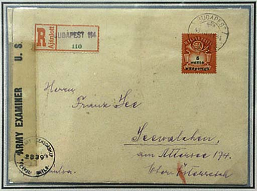

Inflation Records
Please see below an example of why one should fear a high inflation. This letter full of stamps was posted on December 6, 1923 from Germany, Berlin. It was correctly franked, for the destination New York City, U.S.A.. The total face value of all 15 stamps is of 15 x 50 Milliards = 750 Milliards! This high inflation and its consequences were one of factors that facilitated the access to power in Germany of Hitler and of his Nazi Party.
750,000,000,000,000 Mark
We show below, on a cover, the largest denomination definitive stamp ever issued. It is the Sc. 784 (Michel 942), issued the 16th - 26th July 1946. The initial value of the stamp was 5 Millions Pengö, which is already 5 x 10^6 Pengö. The word "pengö" was overprinted with "adopengö", or tax pengö. Because in Michel: "adopengo = Steuer-Pengo = 2 Trilliarden (2x10^21) Pengo" [and in Magyar Posta- es Illetekbelyeg Katalogus (before no.979): "1 adopengo = 2 x 10^21 pengo (ketezer trillio pengo)"], the value of this stamp is:
5 x (10^6) x 2 x (10^21) = 10^28.pengö, or an 1 followed by 28 zeros (credits to Jay T. Carrigan, on RCSD).

10,000,000,000,000,000,000,000,000,000 Pengö
Only two such covers are known, surely due to the very short circulation time of these aberrant stamps (July 26 -31, 1946). The cover was posted on the last day of inflation. Despite of its apparently high value, the cover was sent by registered letter to the neighboring Austria. There it was examined by an US Army censor. Credits: Jon Bell (photo), the exhibitor at APS Stampshow in Columbus, Ohio, August 2003.
Just to mention an historical parallel. After the inflation period in Germany it is Hitler who came to power; during and after the inflation in Hungary there were Stalin's comrades who seized the power.
Revised:
09/18/03. |